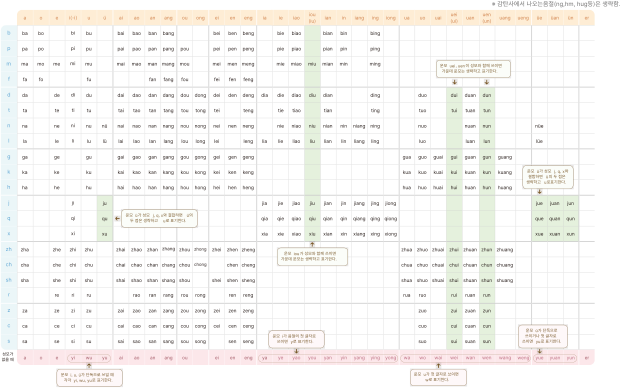

활동
한어병음 결합표를 활용해서 표기 규칙을 연습해 봅시다.

참고
주의해야 할 발음
•
a
: 영어
a
(에이)의 발음과 혼동하지 않도록 한다.
•
an
: 혀를 윗니 뒤쪽 잇몸에 붙이고 발음하며,
ang
이나
eng
발음과
•
혼동하지 않도록 한다.
•
ei, ie, uei,
u
e
:
e
는 [에]에 가깝게 발음한다.
•
ian,
u
an
:
an
은 [안]이 아닌 [앤]처럼 발음한다.
•
er
: 혀끝을 말아서 목구멍 가까이에 대고 [얼]처럼 발음한다. 이때
•
혀끝이 입 천장에 닿지 않도록 주의한다.